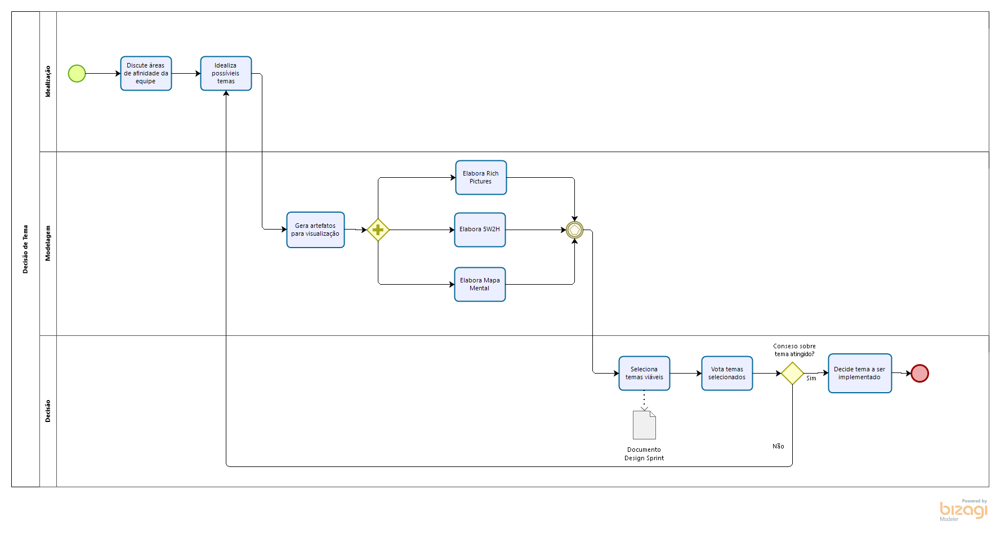
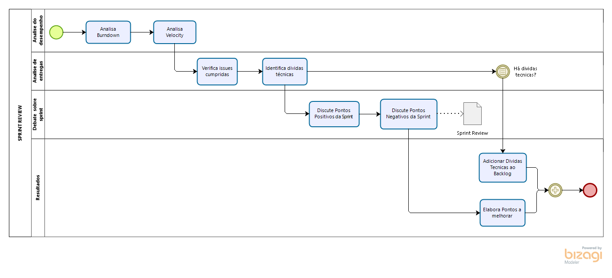
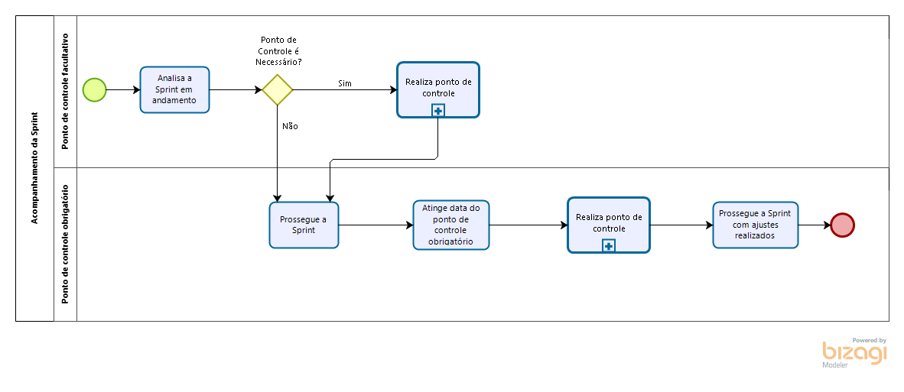

Metodologia
Histórico de Revisão:
| Data | Versão | Descrição | Autor |
|---|---|---|---|
| 12/04/2019 | 0.1 | Primeira versão do documento | Gabriela Guedes |
| 12/04/2019 | 0.2 | Inclusão dos diagramas modelados em Bizagi | Todos os Integrantes do Grupo |
| 27/04/2019 | 0.3 | Refatoração dos diagramas incluindo artefatos | Renan Schadt |
| 29/04/2019 | 0.4 | Inclusão das metodologias de base | Renan Schadt |
| 30/04/2019 | 0.5 | Definição da metodologia montada | Renan Schadt |
1. Introdução
Este documento tem por finalidade definir a metodologia a ser utilizada no projeto, mostrando através dos diagramas feitos no Bizagi, as rotinas e artefatos da equipe até a finalização do desenvolvimento.
2. Metodologias de Base
2.1 Scrum
O Scrum é uma metodologia ágil que contém diversas rotinas para manter a equipe engajada e atualizada sobre o projeto, a se organizarem enquanto resolvem um problema e a refletirem sobre os êxitos e fracassos para melhorarem continuamente. Scrum é um framework estrutural usado para gerenciar o desenvolvimento de produtos. Ele é fundado nos princípios de transparência, inspeção e adaptação. Aos princípios do Scrum integramos eventos, papéis e artefatos, administrando as relações e interações entre eles.
Os papéis do Scrum são Product Owner, Scrum Master e time de desenvolvimento. O Product Owner é o responsável por maximizar o valor do produto e gerenciar o Product Backlog, garantindo que ele está claro para toda equipe. O Scrum Master tem a função de garantir que a equipe está cumprindo as regras da metodologia. O time de desenvolvimento, tem a função de incrementar o produto a cada sprint.
Os eventos do Scrum são: Sprint (período de um mês ou menos onde a equipe se dedica a incrementar o produto), Planejamento de Sprint (reunião ao início de cada sprint onde a equipe decide o que será feito nesta), Review e Retrospectiva da Sprint (a equipe analisa como foi a sprint e quais atividades atividades e artefatos alocados a ela foram finalizados) e Daily (reunião diária para alinhamento da equipe sobre o andamento da sprint).
Os artefatos do Scrum são: Product Backlog (lista ordenada de tudo que é necessário no produto), Sprint Backlog (conjunto de itens do backlog do produto selecionados para a sprint) e Incremento (soma de todos os itens do backlog do produto completados durante uma sprint).

2.2 Kanban
O Kanban, trata-se de uma simbologia visual usada no desenvolvimento de produtos para registrar o progresso das atividades. Essa metodologia foi criada pela empresa Toyota e integra o famoso sistema Toyota de produção.
O Kanban é orientado através de colunas, em que cada uma representa diferentes estados de completeza de uma atividade (a fazer, fazendo, feito), as atividades (cartões visuais) vão transitando entre as colunas, mostrando o andamento do projeto.

2.3 XP
XP é um apelido carinhoso de uma nova metodologia de desenvolvimento designada Extreme Programming, com foco em agilidade de equipes e qualidade de projetos, apoiada em valores como simplicidade, comunicação e feedback constante.
Extreme Programming é dinâmica e flexível, entre as suas "boas práticas" é possível citar: TDD, Comentários em código, diversas entregas pequenas, programação em pares, testes de aceitação, planejamento por pontos, refatoramento, presença constante do cliente, integração contínua, entre outros.
2.4 RUP
3. Metodologia Montada
A metodologia adotada no projeto foi híbrida, baseada nos modelos do Scrum, Kanban, XP e RUP, além da inclusão de alguns artefatos pertinentes para demonstrar melhor nosso produto e como ele está sendo desenvolvido e rotinas pertinentes para organizar melhor o grupo.
Decidimos utilizar uma metodologia deste tipo, pois nenhuma das metodologias puristas se encaixava em nosso contexto. Seja pelo excesso de documentação, no caso do RUP; excesso de rotinas, no caso do Scrum; ou pela falta destas, no caso do XP e Kanban.
Nos sub-tópicos abaixo mostramos quais elementos das metodologias definidas acima foram aplicados no projeto.
3.1 Elementos SCRUM
As seguintes rotinas provindas do SCRUM foram utilizadas no projeto: 1. Sprints com duas semanas de duração 2. Reunião de Planejamento da Sprint 3. Reunião de Review da Sprint 4. Reunião de Retrospectiva da Sprint 5. Reuniões com time-box
Os seguintes artefatos provindos do SCRUM foram utilizados no projeto: 1. Product Backlog 2. Sprint Backlog 3. Documento de Planejamento da Sprint 4. Documento de Revisão da Sprint 5. Definição de pronto
O modelo de papéis do SCRUM foi utilizado no projeto, contando com Product Owner, Scrum Master e Dev Team. O SCRUM é a metodologia base do projeto, principalmente no que se refere a rotinas, provendo maneiras eficazes para controle do grupo durante o desenvolvimento. Os artefatos do SCRUM servem como base para realizar as rotinas.
3.2 Elementos Kanban
O grupo decidiu aplicar o Kanban para possibilitar o acompanhamento do progresso das tarefas definidas, através do plug-in ZenHub. As tarefas são bem documentadas e cada "card" pode receber comentários, com dúvidas e outros tipos de feedback.
Aplicamos as seis práticas básicas do Kanban: Visualizar o fluxo de trabalho (workflow), limitar a quantidade de trabalho em andamento (WIP), gerenciar e medir o fluxo, tornar as políticas do processo explícitas, implementar loops de feedback e usar modelos para reconhecer oportunidades de melhoria.
3.3 Elementos XP
3.4 Elementos RUP
3.5 Elementos Extras
4. Diagramas
4.1 Funcionamento Geral V1.0

4.2 Processo de Decisão de Tema

4.3 Processo Decisão de Metodologia

4.4 Processo Decisão de Tecnologia

4.5 Definição do Backlog

4.6 Documentação

4.7 Sprint Review

4.8 Sprint Planning

4.9 Funcionamento da Sprint

4.10 Acompanhamento da Sprint

4.11 Ponto de Controle